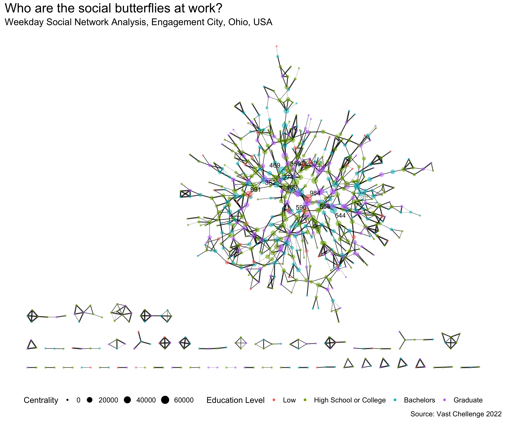

Putting Visual Analytics into Practical Use: VAST Challenge 2022, Challenge 1: Demographics and Relationships.
With reference to Challenge 1 Question 2 of VAST Challenge 2022, this take-home exercise will reveal the patterns of community interactions of the city of Engagement, Ohio USA by using social network analysis approach.
Challenge 1: Demographics and Relationships
Consider the social activities in the community. What patterns do you see in the social networks in the town? Describe up to ten significant patterns you observe, with evidence and rationale.
This take-home exercise aims to reveal the social activities in the community by analyzing the social relationship information in the social network file, and demographics of the participants in participants file.
The scope of this analysis is limited to the social activities happened during weekdays in Mar 2022, at the start of the study.
The following code chunk installs the required R packages and loads them onto RStudio environment. The loaded packages including four network data modeling and visualization packages, namely igraph, tidygraph, ggraph and visNetwork, as well as some time data wrangling packages such as tidyverse and lubridate.
packages = c('igraph', 'tidygraph', 'ggraph', 'visNetwork',
'lubridate', 'tidyverse', 'graphlayouts',
'zoo')
for(p in packages){
if(!require(p, character.only = T)){
install.packages(p)
}
library(p, character.only = T)
}
Edges Data
The edges data, or the link data, contains information on the interaction of the objects (nodes) in the context. In this take-home exercise, the edges data is the social network file that contains information on time and social activities initiated and received by the participants. The social network data is imported using the following code chunk:
social <- read_csv('rawdata/SocialNetwork.csv')
Nodes Data
The nodes data in this context is the participants file that contains information on the demographics of the participants, such as their household sizes, ages, education level, interest group and etc. The social network data is imported using the following code chunk:
participants <- read_csv('data/Participants.csv')
The following code chunk is used to extract social activities data for the month of Mar 2022.
social <- social %>%
mutate(yearmonth = as.yearmon(timestamp)) %>%
filter(yearmonth == 'Mar 2022')
The following code chunk is used to identify the day of the week of the social interaction.
social <- social %>%
mutate(dow = wday(timestamp))
The wday() component of a POSIXct object is the numeric
weekday, ranging from 0-6 starting on Sunday. Therefore, the following
code chunk identifies whether the interaction happened on a weekday or
weekend.
social <- social %>%
mutate(daytype = ifelse(dow==0|dow==7, 'Weekend', 'Weekday')) %>%
select(1:3, 6)
The extracted social file is saved and read as RDS format to avoid uploading large data file to GitHub.
saveRDS(social, 'data/social.rds')
social <- readRDS('data/social.rds')
The following code chunk cleans the participants file by renaming some columns and values for easy of reading.
# rename columns
participants <- participants %>%
rename('Participant_ID' = 'participantId',
'Household_Size' = 'householdSize',
'Have_Kids' = 'haveKids',
'Age' = 'age',
'Education_Level' = 'educationLevel',
'Interest_Group' = 'interestGroup',
'Joviality' = 'joviality')
#rename value
participants$Education_Level <- sub('HighSchoolOrCollege',
'High School or College',
participants$Education_Level)
Age variable is binned with the following code chunk:
# check min and max ages
summary(participants$Age)
Min. 1st Qu. Median Mean 3rd Qu. Max.
18.00 29.00 39.00 39.07 50.00 60.00 The following code chunk bins joviality variable:
The following code chunk checks the composition of social interactions between weekday and weekend. Surprisingly, there are predominately more interaction on weekdays then weekends, weekend social interactions accounts for only 12% of the total, less than half of the average interactions (2/7 = 28.6%). This could be because that as we have found out in the previous take-home exercise that many participants have 2 to 3 recreation activities on weekdays. Another possible reason could be that the social interactions includes interactions in workplaces as well.
check <- social %>%
group_by(daytype) %>%
summarise(percent = n()/nrow(.))
check
# A tibble: 2 × 2
daytype percent
<chr> <dbl>
1 Weekday 0.877
2 Weekend 0.123The following code chunk filters the weekday interactions and aggregates the social interactions by to and from participants. due to the nature of high frequency workplace interactions, weight less than 20 are eliminated to reveal the pattern of participants having more than daily interactions.
The following code chunk first filters out irrelevant nodes in
partifipants file, then creates a tbl_graph item using
as_tbl_graph():
# filter irrelevant nodes
participants_weekday <- participants %>%
filter(Participant_ID %in% social_edges_weekday$participantIdFrom |
Participant_ID %in% social_edges_weekday$participantIdTo)
#tbl_graph
social_graph_weekday <- graph_from_data_frame(social_edges_weekday,
vertices = participants_weekday) %>%
as_tbl_graph()
social_graph_weekday
# A tbl_graph: 790 nodes and 2302 edges
#
# A directed simple graph with 44 components
#
# Node Data: 790 × 9 (active)
name Household_Size Have_Kids Age Education_Level Interest_Group
<chr> <dbl> <lgl> <dbl> <chr> <chr>
1 1 3 TRUE 25 High School or… B
2 2 3 TRUE 35 High School or… A
3 5 3 TRUE 32 High School or… D
4 6 3 TRUE 26 High School or… I
5 7 3 TRUE 27 Bachelors A
6 8 3 TRUE 20 Bachelors G
# … with 784 more rows, and 3 more variables: Joviality <dbl>,
# Age_Group <chr>, Joviality_Group <chr>
#
# Edge Data: 2,302 × 3
from to Weight
<int> <int> <int>
1 1 45 22
2 1 674 25
3 2 168 21
# … with 2,299 more rowsThe output reveals that there are 790 nodes (participants) and 2302 links.
The following code chunk plots the social network graph using
ggraph():
edu_lvl <- c('Low', 'High School or College', 'Bachelors', 'Graduate')
social_graph_weekday %>%
mutate(Centrality = centrality_betweenness()) %>%
ggraph(layout = 'stress') +
geom_edge_link(aes(width = Weight,
alpha = 0.6)) +
scale_edge_alpha(guide = 'none') +
scale_edge_width(range = c(0.1, 1),
guide = 'none') +
geom_node_point(aes(color= factor(Education_Level, levels = edu_lvl),
alpha = 0.2,
size = Centrality)) +
scale_alpha(guide = 'none') +
scale_color_discrete(name= 'Education Level') +
geom_node_text(aes(filter=Centrality > 40000,
label = name),
repel = TRUE) +
labs(title = 'Who are the social butterflies at work?',
subtitle = 'Weekday Social Network Analysis, Engagement City, Ohio, USA',
caption = 'Source: Vast Chellenge 2022') +
theme(legend.position = 'bottom',
panel.background = element_blank(),
legend.key = element_rect(fill= NA),
plot.title = element_text(size = 22),
plot.subtitle = element_text(size = 16),
plot.caption = element_text(size = 12),
legend.title = element_text(size = 14),
legend.text = element_text(size= 12))

Insights
From the plot, we can derive the following insights:
From the code chunk below, we take a closer look at the most sociable participants at work (on weekdays):
top10 <- participants_weekday %>%
filter(Participant_ID == 991 |
Participant_ID == 469 |
Participant_ID == 359 |
Participant_ID == 274 |
Participant_ID == 362 |
Participant_ID == 408 |
Participant_ID == 984 |
Participant_ID == 596 |
Participant_ID == 565 |
Participant_ID == 544)
top10 %>% select(1, 3, 5, 9)
# A tibble: 10 × 4
Participant_ID Have_Kids Education_Level Joviality_Group
<dbl> <lgl> <chr> <fct>
1 274 TRUE High School or College High
2 359 FALSE High School or College High
3 362 FALSE High School or College High
4 408 FALSE Bachelors High
5 469 FALSE Bachelors Medium to High
6 544 TRUE Bachelors Medium to High
7 565 TRUE Bachelors High
8 596 FALSE Graduate High
9 984 FALSE Low High
10 991 FALSE Low High From the table above, we can tell that the top 10 sociable participants at work do have some similarities:
We take a closer look at the top participants initiating (from) interactions and the top participants receiving (to) interactions.
The following code chunk locates the top 10 initiator of the weekday social interactions.
The following code chunk locates the top 10 receiver of the weekday social interactions.
Comparing the list, we realized that the top receivers are also the top initiators of social interactions.
top_initiation
[[1]]
[1] 323 565 436 1009 929 362 417 283 456 994top_receiver
[[1]]
[1] 323 565 436 1009 929 362 417 283 456 994The social interactions for these participants are extracted and prepared using below code chunk.
# filter relevant data on the top 10 initiation and receiving participants
social_edges_weekday_most <- social_edges_weekday %>%
filter(participantIdFrom %in% initiation$participantIdFrom |
participantIdTo %in% initiation$participantIdFrom)
participants_most <- participants %>%
filter(Participant_ID %in% social_edges_weekday_most$participantIdFrom |
Participant_ID %in% social_edges_weekday_most$participantIdTo)
The following code chunk prepares the nodes and edges with ‘id’,
‘from’, ‘to’ and ‘label’ columns and plots the network graph using
vizNetwork():
participants_most <- participants_most %>%
rename(group = Joviality_Group,
id = Participant_ID)
social_most <- social_edges_weekday_most %>%
rename(from = participantIdFrom,
to = participantIdTo)
visNetwork(participants_most,
social_most) %>%
visIgraphLayout(layout = 'layout_with_fr') %>%
visOptions(highlightNearest = TRUE,
nodesIdSelection = TRUE) %>%
visLegend() %>%
visLayout(randomSeed = 1234)
Insights